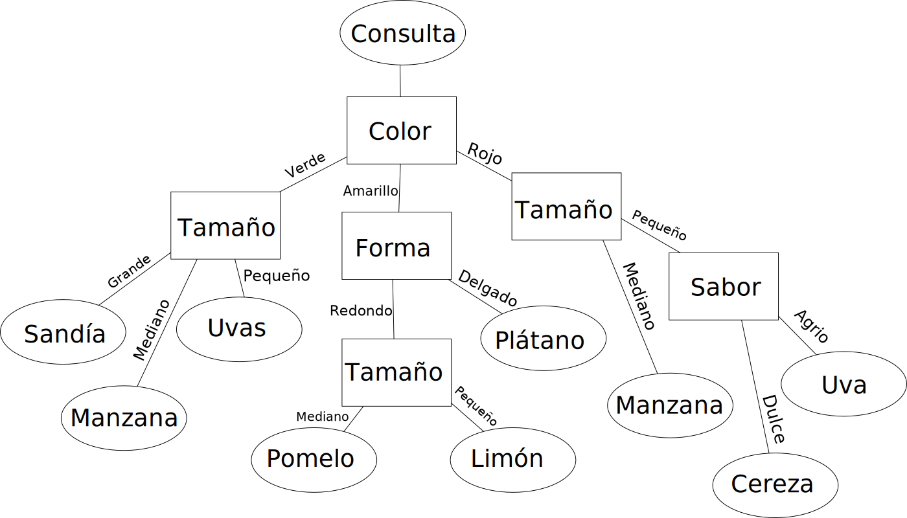

Inteligencia artificial
Escrito por Imanol H.
el 24-02-2016. Última revisión el 05-03-2016
Índice
- Qué es
- En qué consiste
- Límites
- Tipos de inteligencia artificial
- Aplicaciones prácticas
- Implicaciones éticas
- Ejemplos
- Conceptos
- Fuentes
Qué es
La inteligencia artificial es una rama apasionante que tiene su origen en la informática y se basa en el
concepto de conseguir emular[1] al cerebro humano, mediante el
desarrollo un programa que sea capaz de aprender y mejorar por sí sólo (normalmente bajo algún tipo de supervisión).
Fue un concepto acuñado por John McCarthy en un congreso de informática de 1956, y desde entonces este campo ha crecido
de manera exponencial con unas buenas previsiones de futuro.

Progreso humano en la inteligencia artificial. Fuente
En qué consiste
La inteligencia artificial no consiste en escribir unas pautas fijas y finitas al igual que hacen la gran mayoría
de programas, en los cuales introduces unos datos y producen siempre la misma salida, una salida predecible, programada
e invariable, que además, tiene sus límites, ya que si introduces datos para los que la aplicación no está programada,
esta aplicación no será capaz de manejarlos. No los entenderá y no producirá ningún resultado.
La inteligencia artificial consiste en dar un paso más allá. Una inteligencia artificial entrenada es capaz de
manejar datos para los cuales no ha sido programada de manera explícita[2]
Límites
Actualmente, la inteligencia artificial se ve limitada por la velocidad y capacidad de los dispositivos
(ordenadores, teléfonos inteligentes).
A día de hoy, ya hemos conseguido emular el cerebro de un gusano de un milímetro de longitud, que consiste
de un total de trescientas dos neuronas. El cerebro humano contiene unas cien mil millones de neuronas.

Crecimiento en la velocidad de procesado de los dispositivos. Fuente
Comparado con las neuronas de un cerebro humano (cuya velocidad[3]
máxima oscilan entre los 200Hz), los procesadores de hoy en día (mucho más lentos que los que tendremos dentro de
algunos años) ya tienen una velocidad superior a los 2Ghz, es decir, 10 millones de veces más rápidos que las neuronas.
Y la comunicación interna del cerebro, que oscila entre los 120m/s, queda infinitamente distante de la velocidad de los
ordenadores que se comunican de manera óptica a la velocidad de la luz.
Además de todo esto, la capacidad de los dispositivos puede ser ampliada, a diferencia del cerebro que tiene un tamaño
ya determinado. Y, por último, un procesador puede estar trabajando sin parar nunca, sin cansarse.
Tipos de inteligencia artificial
Según el tipo de aprendizaje
- Aprendizaje supervisado: se le presenta una entrada de datos y produce una salida de los datos procesados, y un "tutor" es el que determina si la salida es correcta o no.
- Aprendizaje sin supervisar: se le presenta una entrada de datos sin presentarle ningún otro tipo de información, para que encuentre la estructura de los datos por sí sóla.
- Aprendizaje por refuerzo: un ordenador interactua con un entorno variable en el que debe llevar a cabo una tarea concreta, sin que un tutor le indique cómo explícitamente
Según la forma de llevarlo a cabo (principales métodos)
- Aprendizaje por árbol de decisiones. Este aprendizaje usa un árbol de decisiones, que almacena observaciones y
conclusiones.
 - Aprendizaje por asociación de reglas. Utilizado para descubrir relaciones en grandes bases de datos[4].
- Red neuronal artificial (RNA). Inspirado en redes neuronales biológicas. Los cálculos se estructuran en un grupo de neuronas artificiales interconectadas.
- Programación lógica inductiva (PLI). Se aproxima de manera hipotética, dado un transfondo lógico y una entrada, a una solución que no se le había presentado antes.
- Máquinas de soporte vectorial (MSV). Se usan para clasificar y problemas que necesitan de regresión[5]. Dado una serie de ejemplos, una entrada será clasificada de una forma u otra.
- Clustering. Este tipo de análisis consiste en asignar observaciones a ciertas subcategorías (denominadas clústeres), para que aquellas que están en el mismo clúster sean similares. Este tipo de aprendizaje es una técnica común en análisis estadístico.
- Redes bayesianas. Es un modelo probabilístico que organiza variables al azar según unas determinadas condiciones
mediante un gráfico. Un ejemplo de red bayesiana es el siguiente:
- Algoritmos genéticos. Imita el proceso evolutivo de la selección natural, y usa métodos como la mutación para generar nuevos "genotipos" que, con algo de suerte, serán mejores en encontrar la solución correcta.
Aplicaciones prácticas
La inteligencia artificial ya se encuentra desde hace algún tiempo entre nosotros, como por ejemplo el archiconocido buscador Google, que filtra los resultados más relevantes mediante una inteligencia artificial. Otros ejemplos son el reconocimiento de caracteres a partir de una foto, o incluso reconocimiento del habla con asistentes virtuales como Cortana o Siri, en los videojuegos, en bolsa, en los hospitales, industria pesada, transportes, juguetes, música, aviación, robótica, filtros anti-spam... y un largo etcétera.
Implicaciones éticas
Una vez tengamos la tecnología necesaria para recrear un cerebro humano, si enseñáramos a esta inteligencia artificial al igual que un humano, ¿llegaría a tener sentimientos? ¿Sería consciente de su existencia? ¿Podría sentir felicidad, alegría, tristeza, enfado? ¿Tendría creatividad? ¿Derecho a propiedad? Si la respuesta es que sí, y es la respuesta más lógica, significa que, en realidad, los sentimientos no son nada más que una manera de entender las cosas. No tienen valor por sí mismos. Seríamos capaces de recrearlos, y tendrían el mismo valor que un sentimiento humano, aunque esa inteligencia viviera dentro de un ordenador. Y acabar con esta inteligencia sería acabar con esta vida, una vida casi, por no decir enteramente, humana. Además, todo esto implicaría que todo comportamiento humano es predecible. Por último, si esta inteligencia es realmente como un humano, al utilizarla, ¿la estaríamos esclavizando al obligarla a trabajar para nosotros? ¿En qué momento dejaremos de llamarlos "ordenadores" y comenzaremos a tratarles como "humanos"? ¿Será la humanidad capaz de adaptarse al cambio?
Ejemplos
En el siguiente algorítmo genético podemos ver como una figura aprende a saltar, obedeciendo a las leyes físicas (ver en YouTube):
Por el contrario, en el siguiente ejemplo, un algorítmo genético aprende a "luchar" contra otra figura: (ver en YouTube):
Estos cuatro increíbles ejemplos siguientes muestran un proceso evolutivo similar al sufrido por cualquier tipo de ser (ver en YouTube):
Conceptos
- Emular. Tratar de imitar un modelo, aproximarse a este. Copiar su comportamiento o incluso mejorarlo.
- Explícito. Suceso que ocurre de manera previamente avisada de una forma directa, anticipado sin rodeos.
- Velocidad (en hercios). Número de cálculos realizados por segundo. Un procesador con una velocidad de 100Hz es capaz de realizar 100 cálculos por segundo.
- Base de datos. Lugar en el que se almacena de manera estructurada una información, como por ejemplo un censo que indique el nombre de las personas, sus apellidos, edad, etcétera.
- Regresión. Las pruebas de regresión consisten en someter a un programa a una serie de pruebas para descubrir fallos en este cometidos accidentalmente con anterioridad en versiones anteriores.